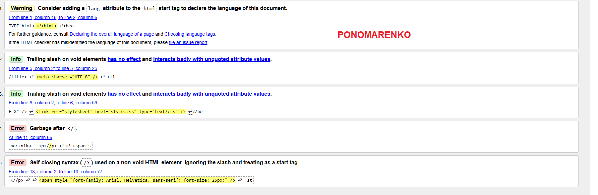
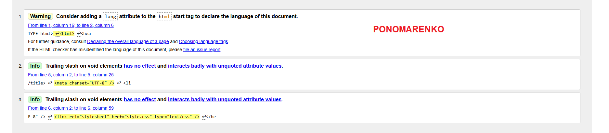

Program (może być aplikacja Web, czyli strona WWW) sprawdzający poprawność
dokumentu o określonej składni
np. walidator kodu HTML, walidator kodu CSS
Walidatory potrafią, wskazać miejsce błędu oraz podać przyczynę
błędu mogą podawać numer błędu

